estimating_parturition.RmdThis document provides steps to estimate calving (i.e., parturition)
status, timing and location, for female barren-ground caribou
(Rangifer tarandus spp.), by analyzing their movement patterns
using functions from the TuktuTools package.
This tool is a refinement of the the “individual-based method” (IBM) developed by DeMars et al (2013) to infer calving status. This method assumes that a female’s movement rate drops rapidly when she calves, and that displacements remain low for several days or weeks if the calf survives, since neonates are not able to move as quickly as adults. Calving events are identifiable by a sudden and marked change – or break point – in a female’s mean step length (i.e. the distance between two successive relocations). Conversely, if the female loses her calf during the neonatal period, a second break point would occur in the female movement pattern, since the female would recover her pre-calving movement rate abruptly. The method also assumes that non-calving females maintian a constant mean movement rate throughout the entire calving period.
The DeMars method assumes a regularly sampled time series of observations, since the analysis is performed on step lengths. We adapt the method to account for variability in sample schedules and missing data by performing analyses on movement rates (i.e. the distance traveled divided by the interval between observations) instead of on step length. More details on this method can be found in Couriot et al. (in press), and users are encouraged to read the paper for a deeper understanding of the methodology.
This preliminary beta version of the
TuktuTools package contains a selection of tools to:
In this document, we focus on the estimateCalving
function, which estimates calving status, timing and location, using an
individual based method. We provide the required steps to estimate
calving, from data processing and cleaning to identifying calving timing
and location. In order to provide concrete examples, the package
includes movement data from four females of barren-ground caribou,
provided by the Government of the Northwest Territories under agreement
8515-05 DR #607.
The package, currently, can be installed from GitHub and loaded via:
devtools::install_github("https://github.com/ocouriot/TuktuTools")
require(TuktuTools)The example data are loaded as follows:
## ID sex Time Year Lon Lat x y
## 1 Dancer f 2002-04-01 00:00:00 2002 -133.8427 62.77028 -51589.97 7006600
## 2 Dancer f 2002-04-01 08:00:00 2002 -133.8394 62.76716 -51480.43 7006228
## 3 Dancer f 2002-04-01 16:00:00 2002 -133.8453 62.77767 -51584.51 7007437
## 4 Dancer f 2002-04-02 00:00:00 2002 -133.8643 62.80010 -52121.93 7010074
## 5 Dancer f 2002-04-02 08:00:00 2002 -133.8621 62.79918 -52024.50 7009953
## 6 Dancer f 2002-04-02 16:00:00 2002 -133.8625 62.80007 -52030.49 7010055Note that the data frame contains a Time column (as POSIX) and ID column, as well as coordinates (Longitude - Latitude) and projected coordinates (x, y).
The GPS devices are configured to relocate daily, every 8-hours, or hourly for some individuals (e.g. 0:00 am, 8:00 am or 4:00 pm). However, it appears that sometimes the GPS devices relocate at 1 or 2 minute intervals not fitting with the hourly schedule. In addition, it is biologically impossible for an animal to move several kilometers in one minute. Thus, the relocations with a time interval in the order of minutes are more prone to be ‘outliers’.
The removeOutliers function in this package allows users
to clean data prior to analyses. The function flags relocations that are
not biologically probable, using the following rules:
removeOutliers(df, steps = 10)df a data frame containing columns: ID - individual
identifier, x and y coordinates (in a metric system), DateTime - date
and time vector (of class POSIXct)
steps if specified, the number of cleaning steps to be
performed (default is 10)
The function adds a column “outlier”. If TRUE, it means that the location has been identified as an outlier.
# load data
data(caribou)
# remove potential outliers and keep only females
caribou.cleaned <- removeOutliers(caribou) %>% subset(!outlier & sex == "f")## Cleaning Step 1
## Number of 'outliers' detected: 4After removing potential outliers, we censored and trimmed our data
to focus on the calving period, to avoid detecting behaviors other than
calving. The calving period has been described to occur between May 19
and July 07 for barren-ground caribou (Cameron et al. 2018). The
convenient function prepData allows trimming the timeseries
to a given period, guaranteeing a minimum number of location fixes a
day, and removing individuals with gaps in the data greater than a
threshold.
prepData(df, start, end, nfixes, dayloss)df a data frame containing columns: ID_Year - individual
identifier per year, x and y coordinates (in a metric system), DateTime
- date and time vector (of class POSIXct)
start,end period of interest start and end
dates, formated as character strings in the form “mm-dd” (e.g. “05-19”
and “07-07” for the parturition analysis)
nfixes individuals with fewer than nfixes observations
per day over the period of of interest are removed
dayloss individuals with this meany consecutive days
with missing locations are removed.
We focused our analysis on the period between May 19 to July 7, with at least 1 fix per day, and no more that 3 consecutive days of missing data.
caribou.prepped <- prepData(caribou.cleaned,
start = "05-19", end = "07-07",
nfixes = 1, dayloss = 3)## Period clipped to 05-19 - 07-07
## Number of excluded individuals-years: 2After we processed, cleaned and filtered movement data, we can analyze movement patterns and estimate calving (i.e. parturition) status, date, location and calf death date and location, if any.
As we adapted the method developed by DeMars et al. (2013), by
analyzing movement rate instead of step length. We first calculate the
movement rate between subsequent relocation for each individual and each
year using the getSpeed function.
getSpeed(df)df a data frame containing columns: ID - individual
identifier, x and y coordinates (in a metric system), Time - date and
time vector (of class POSIXct)
The function adds the following columns to the dataframe: *
speed movement rate between subsequent locations (in meters
per hour) * sl step length between subsequent locations *
dhours an index of the cumulative time (in hours) from the
first to the nth relocation * dt time lag between
subsequent relocation (in hours).
To obtain the movement rates for the 4 barren-ground caribou females:
## ID sex Time Year Lon Lat x y
## 1 Dancer f 2002-05-19 00:00:00 2002 -130.6295 64.86413 139075.4 7215110
## 2 Dancer f 2002-05-19 08:00:00 2002 -130.6010 64.91193 141061.6 7220245
## 3 Dancer f 2002-05-19 16:00:00 2002 -130.5404 65.03517 145551.0 7233559
## 4 Dancer f 2002-05-20 00:00:00 2002 -130.4893 65.12021 149065.5 7242700
## 5 Dancer f 2002-05-20 08:00:00 2002 -130.4349 65.17452 152319.3 7248417
## 6 Dancer f 2002-05-20 16:00:00 2002 -130.3993 65.22834 154681.2 7254187
## outlier z dt sl dhours speed
## 1 FALSE 139075+7215110i NA NA 0 NA
## 2 FALSE 141062+7220245i 8 5505.728 8 688.2160
## 3 FALSE 145551+7233559i 8 14050.469 16 1756.3086
## 4 FALSE 149066+7242700i 8 9792.617 24 1224.0772
## 5 FALSE 152319+7248417i 8 6578.743 32 822.3429
## 6 FALSE 154681+7254187i 8 6234.093 40 779.2616The displacements, intervals and speeds all correspond to the step
moving towards a given location, hence the NA value for the
first of the respective rows.
We can now estimate calving status, calving date, and calf death
date, if any, using the estimateCalving function. This
function determines calving status of a female (no calf, with a calf or
lost her calf), calving date and location, and the calf death date and
location.
As stated previously, we adapted the individual based method developed by Demars et al. (2013) with the main change beting that we model movement rates (i.e. speeds) rather than step lengths. Thus, all models assume that speed follows a Gamma distribution and differ in two parameters: shape and scale.
For the model representing:
The models therefore differ in their number of parameters to estimate: the no calf model has two – shape and scale; the calf model has five – shape and scale before calving, scale at calving, k, and calving date; and the calf death model has six – shape and scale before calving, scale at calving, k, and calving and calf death dates. We used Akaike’s Information Criterion (AIC) model selection and identified the top performing model with the lowest AIC value.
In practice, separating the calf survived vs. calf died models can be challenging,
estimateCalving(df, int, kcons, models = c("full", "calfonly"), PlotIt = FALSE, saveplot = FALSE)df a dataframe containing the movement rate between
subsequent relocation of individuals, as obtained using ‘getSpeed’. See
?get.speed for more information on the Data requirements
int integer value indicating the minimum number of days
between the beginning of the time series and the first BP (calf birth),
the last BP (calf death) and the end of the time series, and between the
two BPs. The main reason for this constraint is that a minimum number of
data points are required in each section of the time-series to be able
to estimate model parameters. We recommend 9 relocations (e.g. 3 days at
3 locations / day).
kcons constraints on the recovery parameter k,
as a vector of the minimum and maximum time it takes the female to
recover normal movement rate (in days).
models either full to fit all three models
(i.e., no calf, calf and calf death models), or calfonly to
fit only the no calf and calf models
drawplot if TRUE the function will draw a plot of the
movement rate against date with the prediction line of the best model
selected (by ‘AIC’), among no-calf, calf, calf death based on the actual
speed of the female in function of the date
saveplot if TRUE, the plot of the best model will be
saved (as ggplot objects).
The function returns a list of 3 data frames: coeffs
containing the best model for each female, selected based on AIC, the
AIC of the 3 models (i.e. no calf model, calf model and calf death
model) and the negative likelihood of each model. Par
containing the estimated parameters of all the models (0: no calf, 1:
calf, 2: calf death) results containing the best model, for
each female, based on AIC, the calving timing and location (if the calf
model is the best model), and the mortality timing and location of the
calf (if the calf death is the best model).
Note, the function will analyze all of the caribou separately as below. At the bottom of this vignette, we produce the complete compacted code (just 5 lines) to run the entire analysis.
# Will generate a sample of two different individuals each time
part <- estimateCalving(df = caribou.mr, int=3, kcons=c(5,21),
models = "calfonly", drawplot=TRUE, saveplot=FALSE)## [1] "Dancer_2002"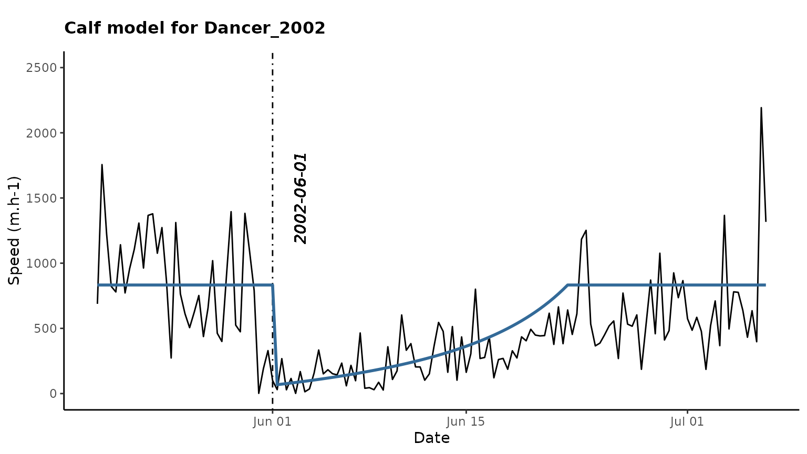
## [1] "Dancer_2003"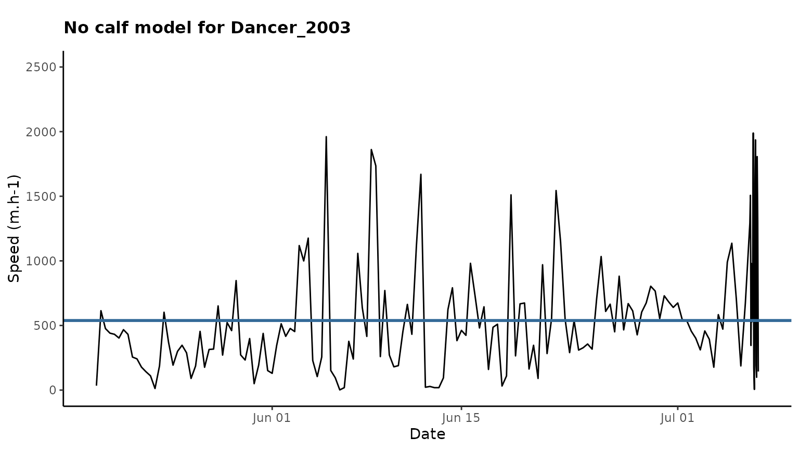
## [1] "Dancer_2004"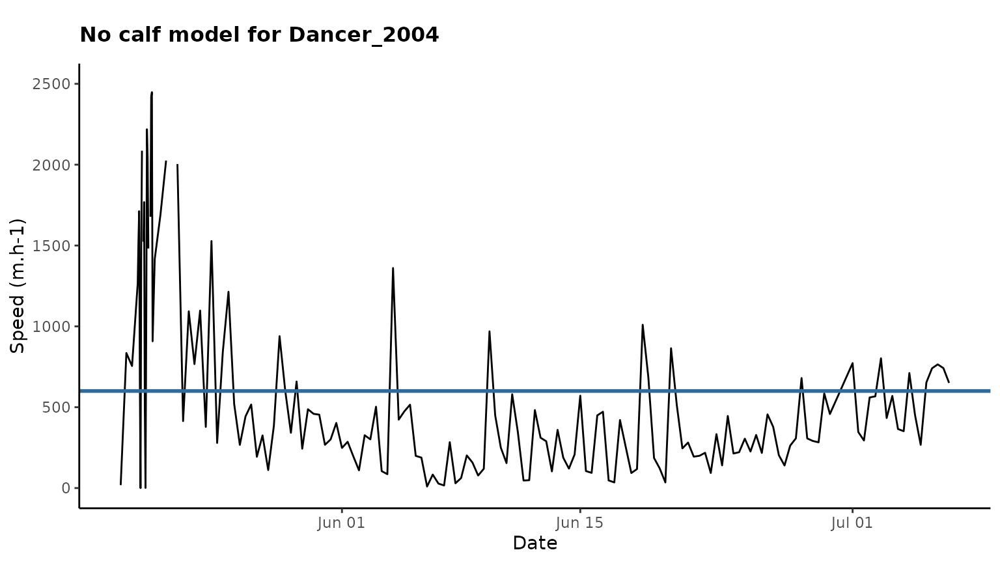
## [1] "Prancer_2014"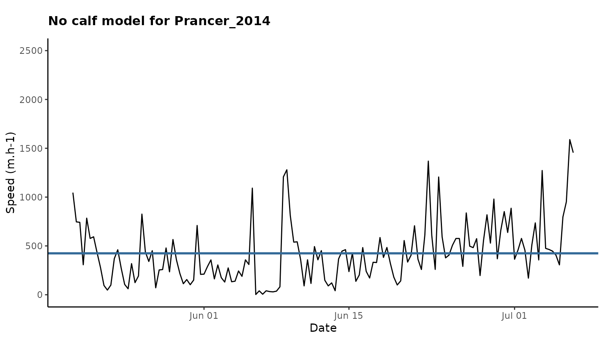
## [1] "Prancer_2015"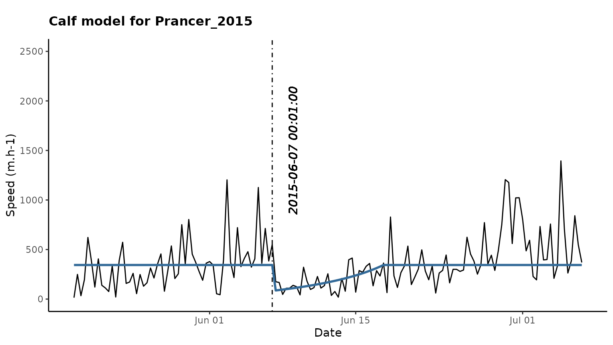
## [1] "Prancer_2016"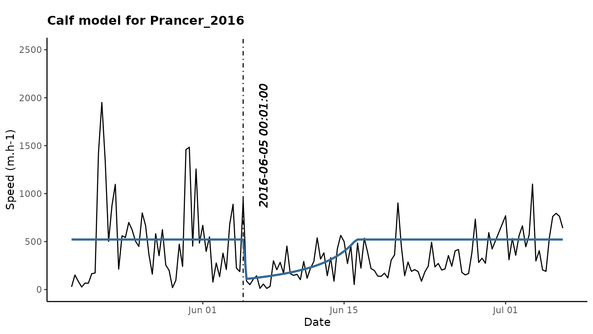
## [1] "Vixen_2007"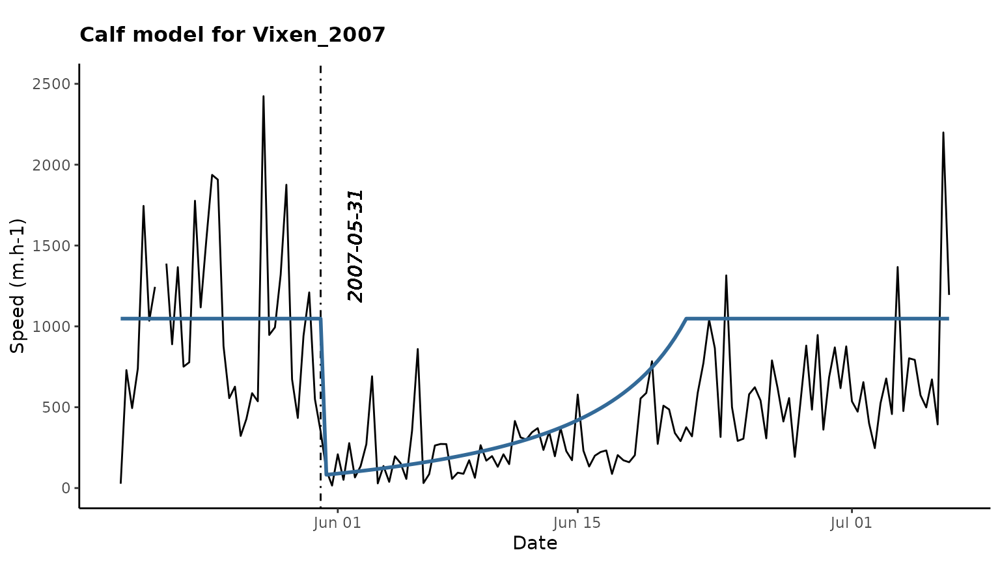
## [1] "Vixen_2008"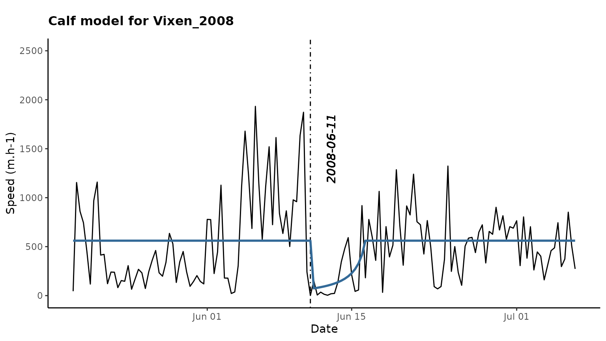
## [1] "Vixen_2009"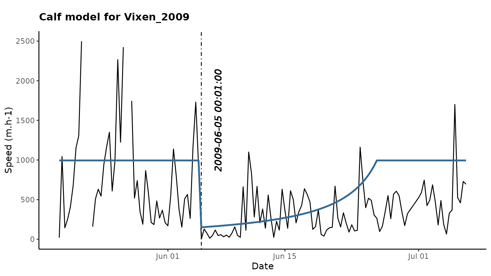
## [1] "Comet_2006"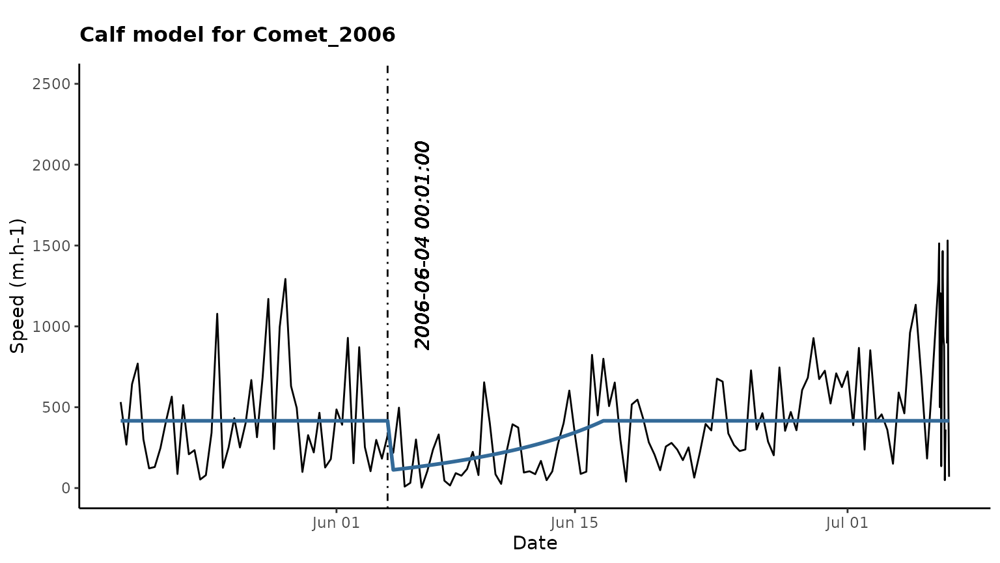
## [1] "Comet_2007"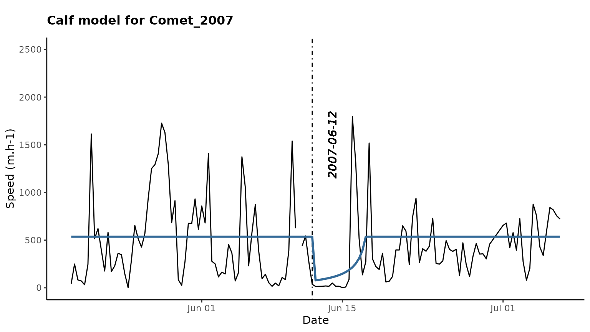
The object part is a list of 3 data frames
which show the estimates, summaries and statistics of calving:
Statistics:
part$statistics## ID_Year ID Year Best.Model M0.AIC Mcalf.AIC M0.mnll
## 1 Dancer_2002 Dancer 2002 calf 2127.988 2049.150 -1061.9938
## 2 Dancer_2003 Dancer 2003 nocalf 2343.712 2352.656 -1169.8561
## 3 Dancer_2004 Dancer 2004 nocalf 2417.476 NA -1206.7378
## 4 Prancer_2014 Prancer 2014 nocalf 2046.705 2063.563 -1021.3523
## 5 Prancer_2015 Prancer 2015 calf 1999.761 1986.886 -997.8806
## 6 Prancer_2016 Prancer 2016 calf 1999.598 1989.871 -997.7991
## 7 Vixen_2007 Vixen 2007 calf 2141.104 2083.512 -1068.5520
## 8 Vixen_2008 Vixen 2008 calf 2140.372 2113.974 -1068.1862
## 9 Vixen_2009 Vixen 2009 calf 2129.976 2092.720 -1062.9879
## 10 Comet_2006 Comet 2006 calf 2262.255 2242.464 -1129.1276
## 11 Comet_2007 Comet 2007 calf 2068.392 2054.771 -1032.1958
## Mcalf.mnll
## 1 -1019.5752
## 2 -1171.3280
## 3 NA
## 4 -1026.7816
## 5 -988.4432
## 6 -989.9354
## 7 -1036.7559
## 8 -1051.9869
## 9 -1041.3602
## 10 -1116.2321
## 11 -1022.3857Estimated parameters:
part$par## ID Year alpha.0 beta.0 alpha.mean1 beta.mean1 alpha.calf1
## 1 Dancer 2002 1.8157222 0.003385664 4.110104 0.004935978 1
## 2 Dancer 2003 1.5163935 0.002816200 1.173065 0.002569369 1
## 3 Dancer 2004 0.8864629 0.001476667 NA NA NA
## 4 Prancer 2014 1.8134460 0.004275352 2.163503 0.005348627 1
## 5 Prancer 2015 1.7909516 0.005022935 1.971807 0.005734049 1
## 6 Prancer 2016 1.4451783 0.003647874 1.381339 0.002648580 1
## 7 Vixen 2007 1.3421362 0.002334021 2.957727 0.002822821 1
## 8 Vixen 2008 1.5909909 0.003059685 1.281277 0.002284303 1
## 9 Vixen 2009 0.7521360 0.001306296 1.191237 0.001197908 1
## 10 Comet 2006 1.4344893 0.003243705 1.846232 0.004439056 1
## 11 Comet 2007 1.1338237 0.002390424 1.068144 0.001992606 1
## beta.calf1 BP.calf1 calving.date1 recovery1
## 1 0.014659220 13 2002-06-01 00:00:00 504.0000
## 2 0.005138737 389 2003-06-12 00:00:00 120.0000
## 3 NA NA <NA> NA
## 4 0.010697254 8 2014-05-27 00:00:00 312.0007
## 5 0.011468098 384 2015-06-07 00:01:00 247.9643
## 6 0.009014247 748 2016-06-05 00:01:00 260.7497
## 7 0.012157285 12 2007-05-31 00:00:00 504.0000
## 8 0.013520722 389 2008-06-11 00:00:00 120.0000
## 9 0.006606989 748 2009-06-05 00:01:00 504.0000
## 10 0.008878112 16 2006-06-04 00:01:00 296.0004
## 11 0.012815665 389 2007-06-12 00:00:00 120.0000Summary of results:
part$results## ID Year Best.Model calving.date Recovery calf.loc.x calf.loc.y
## 1 Dancer 2002 calf 2002-06-01 00:00:00 21 217352.1 7305597
## 2 Dancer 2003 nocalf <NA> NA NA NA
## 3 Dancer 2004 nocalf <NA> NA NA NA
## 4 Prancer 2014 nocalf <NA> NA NA NA
## 5 Prancer 2015 calf 2015-06-07 00:01:00 10 206193.7 7321665
## 6 Prancer 2016 calf 2016-06-05 00:01:00 11 230550.3 7320223
## 7 Vixen 2007 calf 2007-05-31 00:00:00 21 221893.5 7313969
## 8 Vixen 2008 calf 2008-06-11 00:00:00 5 240340.4 7283373
## 9 Vixen 2009 calf 2009-06-05 00:01:00 21 209709.3 7320380
## 10 Comet 2006 calf 2006-06-04 00:01:00 12 219053.9 7327185
## 11 Comet 2007 calf 2007-06-12 00:00:00 5 245517.3 7342269